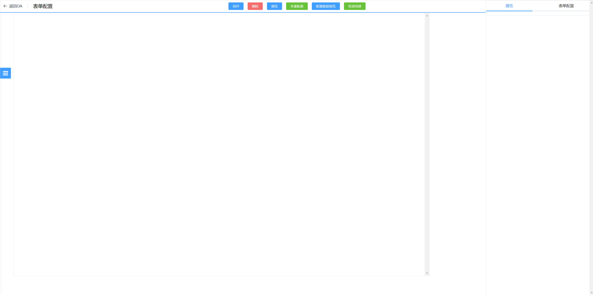

介绍
入门
基础功能
用户管理
角色管理
机构管理
菜单配置
数据字典
表单配置
起步
界面介绍
基础知识
容器控件
输入控件
选择控件
上传控件
其他控件
快速创建
变量配置
大屏配置
流程配置
报表配置
关于
本书使用 GitBook 发布
起步
起步
开始
新建 Form
输入新建表单名称后，点击“新建 form”按钮创建表单后自动跳转到表单配置主界面。 
results matching "
"
No results matching "
"